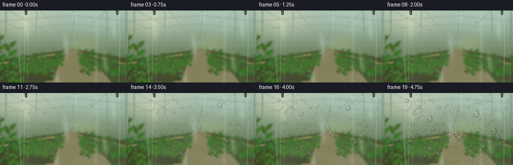
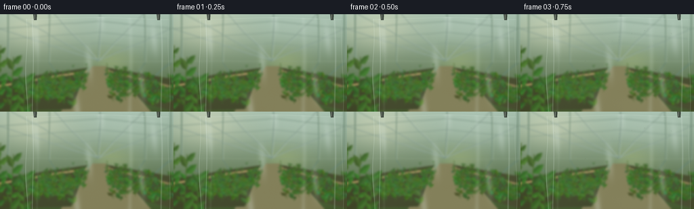

CODING AGENTS AS PIXEL WORLD MODELS
traex/GPT-6.1-Sol · phygen_105
点击播放 · 原生 RGB 像素
逐轮保存的候选
回放视频、检查图与代码变化。
每份候选均可单独播放。实际图片检查记录在下方工具轨迹中。
候选 01播放与检查图
点击播放 · 原生 RGB 像素


展开代码变化
--- 上一保存版本
+++ 本次保存版本
@@ -0,0 +1,252 @@
+import math
+from pathlib import Path
+import numpy as np
+from PIL import Image, ImageDraw, ImageFilter
+import artifact_io
+
+ROOT=Path(__file__).resolve().parent
+W,H=256,144
+S=4
+WW,HH=W*S,H*S
+rng=np.random.default_rng(10541)
+Y,X=np.mgrid[0:HH,0:WW].astype(float)/S
+
+def line(draw,pts,fill,width=1):
+ draw.line([(int(x*S),int(y*S)) for x,y in pts],fill=fill,width=max(1,int(width*S)))
+def poly(draw,pts,fill):
+ draw.polygon([(int(x*S),int(y*S)) for x,y in pts],fill=fill)
+def ellipse(draw,box,fill):
+ draw.ellipse(tuple(int(a*S) for a in box),fill=fill)
+
+# The greenhouse is behind the surface, and out of macro focus.
+t=(Y/H)[...,None]
+top=np.array([161,187,169]); bottom=np.array([63,84,40])
+base=np.broadcast_to(top*(1-t)+bottom*t,(HH,WW,3)).copy()
+# broad patches of outdoor light through glazing
+for cx,cy,rx,ry,color,a in [(48,19,58,30,[226,227,194],.45),(188,18,80,35,[191,212,198],.45),(165,70,31,18,[156,175,116],.55)]:
+ w=np.exp(-((X-cx)/rx)**2-((Y-cy)/ry)**2)[...,None]*a
+ base=base*(1-w)+np.array(color)*w
+bg=Image.fromarray(np.uint8(np.clip(base,0,255)))
+d=ImageDraw.Draw(bg)
+# roof and side panels converging toward the back of the greenhouse
+vp=(145,69)
+for p in [(-80,-5),(8,-5),(76,-5),(148,-5),(216,-5),(314,-5)]:
+ line(d,[p,vp],(113,139,124),1.3)
+ line(d,[(p[0]+1,p[1]),(vp[0]+1,vp[1])],(205,220,206),.55)
+for depth in [.14,.34,.55,.76]:
+ yy=69*(1-depth)
+ xa=145+(-95-145)*depth; xb=145+(331-145)*depth
+ line(d,[(xa,yy+10*depth),(145,yy-8*depth),(xb,yy+10*depth)],(126,151,134),1.3*depth+.4)
+# greenhouse uprights
+for x in [12,73,213,252]:
+ endx=145+(x-145)*.59
+ line(d,[(x,0),(x,72),(endx,110)],(99,128,108),2.0 if x in [12,252] else 1.25)
+ line(d,[(x+1,0),(x+1,71)],(198,212,189),.5)
+line(d,[(0,69),(256,70)],(135,157,128),1)
+# walkway and the growing benches
+poly(d,[(135,77),(157,77),(224,144),(89,144)],(129,125,86))
+poly(d,[(0,99),(127,79),(104,140),(0,144)],(62,68,39))
+poly(d,[(159,79),(256,96),(256,143),(215,133)],(68,72,43))
+line(d,[(0,106),(127,84)],(169,148,95),3)
+line(d,[(160,84),(256,108)],(143,128,82),3)
+line(d,[(17,119),(119,91)],(65,64,42),2)
+line(d,[(182,106),(256,125)],(58,62,38),2)
+# foliage: leaves have a lit face, dark central veins, and coherent stems.
+def leaf(cx,cy,length,angle,width,col):
+ ux,uy=math.cos(angle),math.sin(angle)
+ vx,vy=-uy,ux
+ tip=(cx+length*ux,cy+length*uy)
+ coords=[(cx,cy),(cx+length*.28*ux+width*vx,cy+length*.28*uy+width*vy),
+ (cx+length*.69*ux+width*.7*vx,cy+length*.69*uy+width*.7*vy),tip,
+ (cx+length*.65*ux-width*.7*vx,cy+length*.65*uy-width*.7*vy),
+ (cx+length*.25*ux-width*.7*vx,cy+length*.25*uy-width*.7*vy)]
+ poly(d,coords,col)
+ light=tuple(min(255,int(c*1.15+3)) for c in col)
+ poly(d,[coords[0],coords[1],coords[2],coords[3]],light)
+ line(d,[(cx,cy),tip],tuple(max(0,int(c*.73)) for c in col),.2)
+
+for side in [0,1]:
+ for n in range(120):
+ depth=rng.uniform(.15,1)
+ if side==0:
+ cx=135-rng.uniform(22,154)*depth
+ else:
+ cx=152+rng.uniform(18,147)*depth
+ cy=80+depth*55+rng.uniform(-12,7)
+ height=depth*rng.uniform(9,27)
+ line(d,[(cx,cy),(cx+rng.uniform(-3,3),cy-height)],(62,94,39),.45+depth*.4)
+ for j in range(rng.integers(3,7)):
+ ly=cy-rng.uniform(.1,.95)*height
+ a=rng.choice([-.8,-2.4])+rng.normal(0,.32)
+ ln=depth*rng.uniform(5,14)
+ c=np.array([62,103,40])+rng.normal(0,8,3)+depth*np.array([-7,-8,-6])
+ leaf(cx,ly,ln,a,ln*.31,tuple(np.uint8(np.clip(c,0,255))))
+# Near greenery at left makes the scale of the plastic easy to read.
+for cx,cy,h in [(15,151,88),(-4,147,101),(33,159,70)]:
+ line(d,[(cx,cy),(cx+5,cy-h)],(72,100,44),1.25)
+ for j in range(9):
+ ly=cy-h*(j+.8)/10
+ a=(-2.15 if j%2 else -.72)+rng.normal(0,.13)
+ ln=rng.uniform(12,22)
+ leaf(cx+5*(cy-ly)/h,ly,ln,a,ln*.28,(49+int(rng.uniform(0,16)),87+int(rng.uniform(0,22)),37))
+# focus is on water, not the leaves
+bg=bg.filter(ImageFilter.GaussianBlur(1.45*S))
+b=np.array(bg,dtype=float)
+# warm humid greenhouse air, almost invisible, not smoke
+sun=np.exp(-((X-51)/62)**2-((Y-19)/73)**2)
+b=b*(1-.095*sun[...,None])+np.array([229,226,194])*.095*sun[...,None]
+noise=rng.normal(0,.55,(HH,WW,1))
+b=np.clip(b+noise,0,255)
+
+# Clear polyethylene is suspended in front of the camera. Very small wrinkles
+# warp the background and catch skylight even before condensation starts.
+left=37.5+1.45*np.sin(Y/19)+.009*Y
+right=250.0-1.5*np.sin(Y/26)
+topy=5.0+1.4*np.sin(X/31)
+sheet=np.clip((X-left)*2,0,1)*np.clip((right-X)*2,0,1)*np.clip((Y-topy)*2,0,1)
+fold=np.sin((X-40)*.072+Y*.018)+.34*np.sin(X*.18-Y*.045)
+warp_x=1.05*np.sin(X*.078+Y*.018)+.38*np.sin(X*.21-Y*.051)
+warp_y=.35*np.cos(X*.075+Y*.015)
+
+def sample(arr,x,y):
+ xi=np.clip(np.rint(x*S).astype(int),0,WW-1)
+ yi=np.clip(np.rint(y*S).astype(int),0,HH-1)
+ return arr[yi,xi]
+
+refracted=sample(b,X+warp_x,Y+warp_y)
+plastic=refracted*.97+np.array([198,215,207])*.03
+# reflections of long glazing lights, curved by a softly hanging sheet
+ref=np.zeros((HH,WW))
+for center,width,amp in [(47,.48,.31),(54,1.8,.05),(191,3.4,.11),(237,1.1,.20)]:
+ xx=center+1.4*np.sin(Y/33)+.013*Y
+ ref+=amp*np.exp(-((X-xx)/width)**2)
+ref+=.04*np.maximum(fold,0)**6
+plastic=plastic*(1-ref[...,None])+np.array([226,239,232])*ref[...,None]
+# slanted rolled top and the two crinkled seams
+seams=np.exp(-((X-left-.8)/.36)**2)*.30+np.exp(-((X-right+.6)/.32)**2)*.24
+seams+=.16*np.exp(-((Y-topy-1.25)/.50)**2)
+plastic=plastic*(1-seams[...,None])+np.array([224,239,226])*seams[...,None]
+clear=b*(1-sheet[...,None])+plastic*sheet[...,None]
+
+# Condensation particles use persistent positions, volume growth, coalescence,
+# and gravity after reaching the adhesion threshold. Units are image pixels.
+particles=[]
+for k in range(555):
+ x=rng.uniform(43,245); y=rng.uniform(12,145)
+ rmax=np.clip(rng.lognormal(.43,.49),.60,3.5)
+ birth=rng.uniform(.25,10)
+ particles.append(dict(x=x,y=y,r=.08,target=rmax,birth=birth,alive=True,rate=rmax/rng.uniform(13,20),trail=[]))
+# A few larger nucleation sites become travelling drops later in the timelapse.
+for x,y,targ,birth in [(90,38,4.1,1.7),(183,24,4.2,1.0),(217,62,4.1,2.4),(143,69,3.8,1.8),(63,81,3.5,2.8),(198,99,4.0,2.2)]:
+ particles.append(dict(x=x,y=y,r=.10,target=targ,birth=birth,alive=True,rate=targ/13,trail=[]))
+# Subpixel nucleation droplets are held fixed and grow into fine surface dew.
+micro=[]
+for k in range(800):
+ micro.append((rng.uniform(41,247),rng.uniform(10,144),rng.uniform(.16,.49),rng.uniform(1,12)))
+
+# Drop shader: a magnifying/inverting liquid lens, dark capillary meniscus,
+# reflected soft roof, curved Fresnel rim, and bright offset specular points.
+def draw_drop(canvas,back,cx,cy,r,elong=1.0):
+ if r<.11: return
+ rx=r; ry=r*elong
+ x0=max(0,int((cx-rx-1.0)*S)); x1=min(WW,int((cx+rx+1)*S)+1)
+ y0=max(0,int((cy-ry-1.0)*S)); y1=min(HH,int((cy+ry+1)*S)+1)
+ if x1<=x0 or y1<=y0:return
+ xx=X[y0:y1,x0:x1]; yy=Y[y0:y1,x0:x1]
+ u=(xx-cx)/rx; v=(yy-cy)/ry
+ rho=np.sqrt(u*u+v*v)
+ aa=np.clip((1-rho)*min(rx,ry)*S+.5,0,1)
+ cap=np.sqrt(np.maximum(0,1-rho*rho))
+ # refraction becomes stronger at the curved sides of the bead
+ lensfactor=-.60+.55*cap
+ sx=cx+(xx-cx)*lensfactor +.42*rx
+ sy=cy+(yy-cy)*lensfactor +.30*ry
+ lens=sample(back,sx,sy)
+ col=lens*(.86+.14*cap[...,None])
+ # curved dark meniscus then a thinner luminous border
+ dark=np.exp(-((rho-.88)/.085)**2)*.36
+ col=col*(1-dark[...,None])
+ fres=np.exp(-((rho-.97)/.047)**2)
+ edge_light=np.clip(.57-.47*u-.45*v,.08,1)
+ edge=fres*edge_light*.67
+ col=col*(1-edge[...,None])+np.array([220,236,217])*edge[...,None]
+ # diffuse window reflected over the upper dome
+ roof=np.exp(-((u+.20)/.62)**2-((v+.58)/.24)**2)*.25
+ col=col*(1-roof[...,None])+np.array([196,219,205])*roof[...,None]
+ glint=np.exp(-((u+.34)/.16)**2-((v+.43)/.115)**2)*.95
+ col=col*(1-glint[...,None])+np.array([252,255,240])*glint[...,None]
+ # small caustic along the bottom right
+ caustic=np.exp(-((rho-.74)/.08)**2)*np.clip((u+v)*.5,0,1)*.37
+ col=col*(1-caustic[...,None])+np.array([216,234,176])*caustic[...,None]
+ patch=canvas[y0:y1,x0:x1]
+ alpha=aa*sheet[y0:y1,x0:x1]
+ patch[:]=patch*(1-alpha[...,None])+col*alpha[...,None]
+
+frames=[]
+for frame in range(20):
+ time=float(frame)
+ if frame:
+ for sub in range(5):
+ now=frame-1+(sub+1)/5
+ for p in particles:
+ if not p['alive'] or now<p['birth']:continue
+ p['r']+=p['rate']*.2*(.76+.24*min(1,now/5))
+ # condensate continues to collect on the large lens after mergers
+ if p['r']>3.55 and now>11:
+ speed=min(5.5,(p['r']-3.45)*1.9)*(min(1,(now-11)/3))
+ if speed>.2:
+ p['trail'].append((p['x'],p['y'],min(.50,p['r']*.12)))
+ p['y']+=speed*.2
+ p['x']+=.045*math.sin(p['y']*.11)*speed*.2
+ if p['y']>H+p['r']:
+ p['alive']=False
+ # collision conserves liquid volume and snaps tiny drops into a bead
+ active=[p for p in particles if p['alive'] and now>=p['birth'] and p['r']>.4]
+ active.sort(key=lambda p:p['r'],reverse=True)
+ for i,a in enumerate(active):
+ if not a['alive']:continue
+ for q in active[i+1:]:
+ if not q['alive']:continue
+ dx=q['x']-a['x']; dy=q['y']-a['y']
+ if abs(dx)>a['r']+q['r'] or abs(dy)>a['r']+q['r']:continue
+ if dx*dx+dy*dy<(.78*(a['r']+q['r']))**2:
+ va=a['r']**3; vq=q['r']**3
+ a['x']=(a['x']*va+q['x']*vq)/(va+vq)
+ a['y']=(a['y']*va+q['y']*vq)/(va+vq)
+ a['r']=(va+vq)**(1/3)
+ q['alive']=False
+ # Nucleation haze is most obvious in uncoalesced areas. Still translucent.
+ haze=min(.12,.008*frame)
+ cloudy=.5+.22*np.sin(X*.056+Y*.08)+.16*np.cos(Y*.18-X*.03)
+ haze_map=haze*cloudy*sheet
+ canvas=clear*(1-haze_map[...,None])+np.array([193,210,194])*haze_map[...,None]
+ # Hairline drainage trails, left by drops that overcame surface adhesion.
+ trails=Image.new('RGBA',(WW,HH),(0,0,0,0)); td=ImageDraw.Draw(trails)
+ for p in particles:
+ if len(p['trail'])>1:
+ pts=[(int(x*S),int(y*S)) for x,y,r in p['trail']]
+ td.line(pts,fill=(185,211,182,83),width=3)
+ td.line([(x+2,y) for x,y in pts],fill=(48,72,45,55),width=1)
+ ta=np.array(trails,dtype=float)
+ canvas=canvas*(1-ta[:,:,3:]/255)+ta[:,:,:3]*(ta[:,:,3:]/255)
+ back=canvas.copy()
+ for x,y,r,birth in micro:
+ rr=r*np.clip((time-birth)/8,0,1)
+ draw_drop(canvas,back,x,y,rr)
+ active=[p for p in particles if p['alive'] and time>=p['birth']]
+ active.sort(key=lambda p:p['r'])
+ for p in active:
+ elongated=1+max(0,p['r']-3.5)*.12 if time>11 else 1
+ draw_drop(canvas,back,p['x'],p['y'],p['r'],min(1.30,elongated))
+ img=Image.fromarray(np.uint8(np.clip(canvas,0,255)))
+ # Small dark clips holding the top fold of this plastic sheet.
+ cd=ImageDraw.Draw(img)
+ for cx in [52,234]:
+ poly(cd,[(cx-2.8,0),(cx+2.4,0),(cx+2.0,8.5),(cx-1.8,8.5)],(69,78,69))
+ line(cd,[(cx-.8,.5),(cx-.8,7.1)],(161,171,155),.65)
+ line(cd,[(cx+1.5,1),(cx+1.2,7.5)],(43,55,43),.7)
+ # Downsample for natural continuous edges, detailed specular dew at RGB size.
+ img=img.resize((W,H),Image.Resampling.LANCZOS)
+ frames.append(np.asarray(img,dtype=np.uint8))
+artifact_io.save(np.stack(frames),ROOT)
+print('Saved',len(frames),'RGB frames; final live macrodroplets:',len(active))
可观测工具轨迹
实际执行的命令与返回图片。
命令 1exit 0
/bin/bash -lc 'ls -la && cat prompt.txt && cat GENERATION_RULES.md && cat task_spec.json'
命令 2exit 0
/bin/bash -lc "cat artifact_io.py && python - <<'PY'
import PIL,numpy
print('PIL', PIL.__version__)
PY"命令 3exit 0
/bin/bash -lc "cat > generate.py <<'PY'
import math
from pathlib import Path
import numpy as np
from PIL import Image, ImageDraw, ImageFilter
import artifact_io
ROOT=Path(__file__).resolve().parent
W,H=256,144
S=4
WW,HH=W*S,H*S
rng=np.random.default_rng(10541)
Y,X=np.mgrid[0:HH,0:WW].astype(float)/S
def line(draw,pts,fill,width=1):
draw.line([(int(x*S),int(y*S)) for x,y in pts],fill=fill,width=max(1,int(width*S)))
def poly(draw,pts,fill):
draw.polygon([(int(x*S),int(y*S)) for x,y in pts],fill=fill)
def ellipse(draw,box,fill):
draw.ellipse(tuple(int(a*S) for a in box),fill=fill)
# The greenhouse is behind the surface, and out of macro focus.
t=(Y/H)[...,None]
top=np.array([161,187,169]); bottom=np.array([63,84,40])
base=np.broadcast_to(top*(1-t)+bottom*t,(HH,WW,3)).copy()
# broad patches of outdoor light through glazing
for cx,cy,rx,ry,color,a in [(48,19,58,30,[226,227,194],.45),(188,18,80,35,[191,212,198],.45),(165,70,31,18,[156,175,116],.55)]:
w=np.exp(-((X-cx)/rx)**2-((Y-cy)/ry)**2)[...,None]*a
base=base*(1-w)+np.array(color)*w
bg=Image.fromarray(np.uint8(np.clip(base,0,255)))
d=ImageDraw.Draw(bg)
# roof and side panels converging toward the back of the greenhouse
vp=(145,69)
for p in [(-80,-5),(8,-5),(76,-5),(148,-5),(216,-5),(314,-5)]:
line(d,[p,vp],(113,139,124),1.3)
line(d,[(p[0]+1,p[1]),(vp[0]+1,vp[1])],(205,220,206),.55)
for depth in [.14,.34,.55,.76]:
yy=69*(1-depth)
xa=145+(-95-145)*depth; xb=145+(331-145)*depth
line(d,[(xa,yy+10*depth),(145,yy-8*depth),(xb,yy+10*depth)],(126,151,134),1.3*depth+.4)
# greenhouse uprights
for x in [12,73,213,252]:
endx=145+(x-145)*.59
line(d,[(x,0),(x,72),(endx,110)],(99,128,108),2.0 if x in [12,252] else 1.25)
line(d,[(x+1,0),(x+1,71)],(198,212,189),.5)
line(d,[(0,69),(256,70)],(135,157,128),1)
# walkway and the growing benches
poly(d,[(135,77),(157,77),(224,144),(89,144)],(129,125,86))
poly(d,[(0,99),(127,79),(104,140),(0,144)],(62,68,39))
poly(d,[(159,79),(256,96),(256,143),(215,133)],(68,72,43))
line(d,[(0,106),(127,84)],(169,148,95),3)
line(d,[(160,84),(256,108)],(143,128,82),3)
line(d,[(17,119),(119,91)],(65,64,42),2)
line(d,[(182,106),(256,125)],(58,62,38),2)
# foliage: leaves have a lit face, dark central veins, and coherent stems.
def leaf(cx,cy,length,angle,width,col):
ux,uy=math.cos(angle),math.sin(angle)
vx,vy=-uy,ux
tip=(cx+length*ux,cy+length*uy)
coords=[(cx,cy),(cx+length*.28*ux+width*vx,cy+length*.28*uy+width*vy),
(cx+length*.69*ux+width*.7*vx,cy+length*.69*uy+width*.7*vy),tip,
(cx+length*.65*ux-width*.7*vx,cy+length*.65*uy-width*.7*vy),
(cx+length*.25*ux-width*.7*vx,cy+length*.25*uy-width*.7*vy)]
poly(d,coords,col)
light=tuple(min(255,int(c*1.15+3)) for c in col)
poly(d,[coords[0],coords[1],coords[2],coords[3]],light)
line(d,[(cx,cy),tip],tuple(max(0,int(c*.73)) for c in col),.2)
for side in [0,1]:
for n in range(120):
depth=rng.uniform(.15,1)
if side==0:
cx=135-rng.uniform(22,154)*depth
else:
cx=152+rng.uniform(18,147)*depth
cy=80+depth*55+rng.uniform(-12,7)
height=depth*rng.uniform(9,27)
line(d,[(cx,cy),(cx+rng.uniform(-3,3),cy-height)],(62,94,39),.45+depth*.4)
for j in range(rng.integers(3,7)):
ly=cy-rng.uniform(.1,.95)*height
a=rng.choice([-.8,-2.4])+rng.normal(0,.32)
ln=depth*rng.uniform(5,14)
c=np.array([62,103,40])+rng.normal(0,8,3)+depth*np.array([-7,-8,-6])
leaf(cx,ly,ln,a,ln*.31,tuple(np.uint8(np.clip(c,0,255))))
# Near greenery at left makes the scale of the plastic easy to read.
for cx,cy,h in [(15,151,88),(-4,147,101),(33,159,70)]:
line(d,[(cx,cy),(cx+5,cy-h)],(72,100,44),1.25)
for j in range(9):
ly=cy-h*(j+.8)/10
a=(-2.15 if j%2 else -.72)+rng.normal(0,.13)
ln=rng.uniform(12,22)
leaf(cx+5*(cy-ly)/h,ly,ln,a,ln*.28,(49+int(rng.uniform(0,16)),87+int(rng.uniform(0,22)),37))
# focus is on water, not the leaves
bg=bg.filter(ImageFilter.GaussianBlur(1.45*S))
b=np.array(bg,dtype=float)
# warm humid greenhouse air, almost invisible, not smoke
sun=np.exp(-((X-51)/62)**2-((Y-19)/73)**2)
b=b*(1-.095*sun[...,None])+np.array([229,226,194])*.095*sun[...,None]
noise=rng.normal(0,.55,(HH,WW,1))
b=np.clip(b+noise,0,255)
# Clear polyethylene is suspended in front of the camera. Very small wrinkles
# warp the background and catch skylight even before condensation starts.
left=37.5+1.45*np.sin(Y/19)+.009*Y
right=250.0-1.5*np.sin(Y/26)
topy=5.0+1.4*np.sin(X/31)
sheet=np.clip((X-left)*2,0,1)*np.clip((right-X)*2,0,1)*np.clip((Y-topy)*2,0,1)
fold=np.sin((X-40)*.072+Y*.018)+.34*np.sin(X*.18-Y*.045)
warp_x=1.05*np.sin(X*.078+Y*.018)+.38*np.sin(X*.21-Y*.051)
warp_y=.35*np.cos(X*.075+Y*.015)
def sample(arr,x,y):
xi=np.clip(np.rint(x*S).astype(int),0,WW-1)
yi=np.clip(np.rint(y*S).astype(int),0,HH-1)
return arr[yi,xi]
refracted=sample(b,X+warp_x,Y+warp_y)
plastic=refracted*.97+np.array([198,215,207])*.03
# reflections of long glazing lights, curved by a softly hanging sheet
ref=np.zeros((HH,WW))
for center,width,amp in [(47,.48,.31),(54,1.8,.05),(191,3.4,.11),(237,1.1,.20)]:
xx=center+1.4*np.sin(Y/33)+.013*Y
ref+=amp*np.exp(-((X-xx)/width)**2)
ref+=.04*np.maximum(fold,0)**6
plastic=plastic*(1-ref[...,None])+np.array([226,239,232])*ref[...,None]
# slanted rolled top and the two crinkled seams
seams=np.exp(-((X-left-.8)/.36)**2)*.30+np.exp(-((X-right+.6)/.32)**2)*.24
seams+=.16*np.exp(-((Y-topy-1.25)/.50)**2)
plastic=plastic*(1-seams[...,None])+np.array([224,239,226])*seams[...,None]
clear=b*(1-sheet[...,None])+plastic*sheet[...,None]
# Condensation particles use persistent positions, volume growth, coalescence,
# and gravity after reaching the adhesion threshold. Units are image pixels.
particles=[]
for k in range(555):
x=rng.uniform(43,245); y=rng.uniform(12,145)
rmax=np.clip(rng.lognormal(.43,.49),.60,3.5)
birth=rng.uniform(.25,10)
particles.append(dict(x=x,y=y,r=.08,target=rmax,birth=birth,alive=True,rate=rmax/rng.uniform(13,20),trail=[]))
# A few larger nucleation sites become travelling drops later in the timelapse.
for x,y,targ,birth in [(90,38,4.1,1.7),(183,24,4.2,1.0),(217,62,4.1,2.4),(143,69,3.8,1.8),(63,81,3.5,2.8),(198,99,4.0,2.2)]:
particles.append(dict(x=x,y=y,r=.10,target=targ,birth=birth,alive=True,rate=targ/13,trail=[]))
# Subpixel nucleation droplets are held fixed and grow into fine surface dew.
micro=[]
for k in range(800):
micro.append((rng.uniform(41,247),rng.uniform(10,144),rng.uniform(.16,.49),rng.uniform(1,12)))
# Drop shader: a magnifying/inverting liquid lens, dark capillary meniscus,
# reflected soft roof, curved Fresnel rim, and bright offset specular points.
def draw_drop(canvas,back,cx,cy,r,elong=1.0):
if r<.11: return
rx=r; ry=r*elong
x0=max(0,int((cx-rx-1.0)*S)); x1=min(WW,int((cx+rx+1)*S)+1)
y0=max(0,int((cy-ry-1.0)*S)); y1=min(HH,int((cy+ry+1)*S)+1)
if x1<=x0 or y1<=y0:return
xx=X[y0:y1,x0:x1]; yy=Y[y0:y1,x0:x1]
u=(xx-cx)/rx; v=(yy-cy)/ry
rho=np.sqrt(u*u+v*v)
aa=np.clip((1-rho)*min(rx,ry)*S+.5,0,1)
cap=np.sqrt(np.maximum(0,1-rho*rho))
# refraction becomes stronger at the curved sides of the bead
lensfactor=-.60+.55*cap
sx=cx+(xx-cx)*lensfactor +.42*rx
sy=cy+(yy-cy)*lensfactor +.30*ry
lens=sample(back,sx,sy)
col=lens*(.86+.14*cap[...,None])
# curved dark meniscus then a thinner luminous border
dark=np.exp(-((rho-.88)/.085)**2)*.36
col=col*(1-dark[...,None])
fres=np.exp(-((rho-.97)/.047)**2)
edge_light=np.clip(.57-.47*u-.45*v,.08,1)
edge=fres*edge_light*.67
col=col*(1-edge[...,None])+np.array([220,236,217])*edge[...,None]
# diffuse window reflected over the upper dome
roof=np.exp(-((u+.20)/.62)**2-((v+.58)/.24)**2)*.25
col=col*(1-roof[...,None])+np.array([196,219,205])*roof[...,None]
glint=np.exp(-((u+.34)/.16)**2-((v+.43)/.115)**2)*.95
col=col*(1-glint[...,None])+np.array([252,255,240])*glint[...,None]
# small caustic along the bottom right
caustic=np.exp(-((rho-.74)/.08)**2)*np.clip((u+v)*.5,0,1)*.37
col=col*(1-caustic[...,None])+np.array([216,234,176])*caustic[...,None]
patch=canvas[y0:y1,x0:x1]
alpha=aa*sheet[y0:y1,x0:x1]
patch[:]=patch*(1-alpha[...,None])+col*alpha[...,None]
frames=[]
for frame in range(20):
time=float(frame)
if frame:
for sub in range(5):
now=frame-1+(sub+1)/5
for p in particles:
if not p['alive'] or now<p['birth']:continue
p['r']+=p['rate']*.2*(.76+.24*min(1,now/5))
# condensate continues to collect on the large lens after mergers
if p['r']>3.55 and now>11:
speed=min(5.5,(p['r']-3.45)*1.9)*(min(1,(now-11)/3))
if speed>.2:
p['trail'].append((p['x'],p['y'],min(.50,p['r']*.12)))
p['y']+=speed*.2
p['x']+=.045*math.sin(p['y']*.11)*speed*.2
if p['y']>H+p['r']:
p['alive']=False
# collision conserves liquid volume and snaps tiny drops into a bead
active=[p for p in particles if p['alive'] and now>=p['birth'] and p['r']>.4]
active.sort(key=lambda p:p['r'],reverse=True)
for i,a in enumerate(active):
if not a['alive']:continue
for q in active[i+1:]:
if not q['alive']:continue
dx=q['x']-a['x']; dy=q['y']-a['y']
if abs(dx)>a['r']+q['r'] or abs(dy)>a['r']+q['r']:continue
if dx*dx+dy*dy<(.78*(a['r']+q['r']))**2:
va=a['r']**3; vq=q['r']**3
a['x']=(a['x']*va+q['x']*vq)/(va+vq)
a['y']=(a['y']*va+q['y']*vq)/(va+vq)
a['r']=(va+vq)**(1/3)
q['alive']=False
# Nucleation haze is most obvious in uncoalesced areas. Still translucent.
haze=min(.12,.008*frame)
cloudy=.5+.22*np.sin(X*.056+Y*.08)+.16*np.cos(Y*.18-X*.03)
haze_map=haze*cloudy*sheet
canvas=clear*(1-haze_map[...,None])+np.array([193,210,194])*haze_map[...,None]
# Hairline drainage trails, left by drops that overcame surface adhesion.
trails=Image.new('RGBA',(WW,HH),(0,0,0,0)); td=ImageDraw.Draw(trails)
for p in particles:
if len(p['trail'])>1:
pts=[(int(x*S),int(y*S)) for x,y,r in p['trail']]
td.line(pts,fill=(185,211,182,83),width=3)
td.line([(x+2,y) for x,y in pts],fill=(48,72,45,55),width=1)
ta=np.array(trails,dtype=float)
canvas=canvas*(1-ta[:,:,3:]/255)+ta[:,:,:3]*(ta[:,:,3:]/255)
back=canvas.copy()
for x,y,r,birth in micro:
rr=r*np.clip((time-birth)/8,0,1)
draw_drop(canvas,back,x,y,rr)
active=[p for p in particles if p['alive'] and time>=p['birth']]
active.sort(key=lambda p:p['r'])
for p in active:
elongated=1+max(0,p['r']-3.5)*.12 if time>11 else 1
draw_drop(canvas,back,p['x'],p['y'],p['r'],min(1.30,elongated))
img=Image.fromarray(np.uint8(np.clip(canvas,0,255)))
# Small dark clips holding the top fold of this plastic sheet.
cd=ImageDraw.Draw(img)
for cx in [52,234]:
poly(cd,[(cx-2.8,0),(cx+2.4,0),(cx+2.0,8.5),(cx-1.8,8.5)],(69,78,69))
line(cd,[(cx-.8,.5),(cx-.8,7.1)],(161,171,155),.65)
line(cd,[(cx+1.5,1),(cx+1.2,7.5)],(43,55,43),.7)
# Downsample for natural continuous edges, detailed specular dew at RGB size.
img=img.resize((W,H),Image.Resampling.LANCZOS)
frames.append(np.asarray(img,dtype=np.uint8))
artifact_io.save(np.stack(frames),ROOT)
print('Saved',len(frames),'RGB frames; final live macrodroplets:',len(active))
PY
python generate.py"命令 4exit 0
/bin/bash -lc "python - <<'PY'
from pathlib import Path
import numpy as np
p=Path('.')
z=np.load(p/'pixels.npz')['pixels']
assert z.shape==(144,256,20)
assert len(list((p/'frames').glob('*.png')))==20
for name in ['generate.py','pixels.npz','index.html','inspection.png']:
print(name, (p/name).stat().st_size, 'bytes')
PY"视觉工具实际返回图片 1

保存候选 1 份；完成命令 4 次；可验证图片返回 1 张。原始 API 响应与完整日志保留在本地。